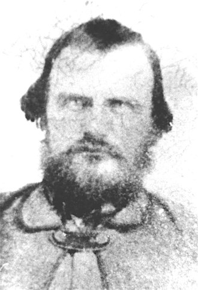
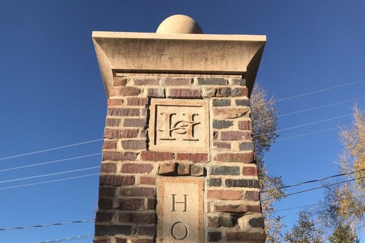
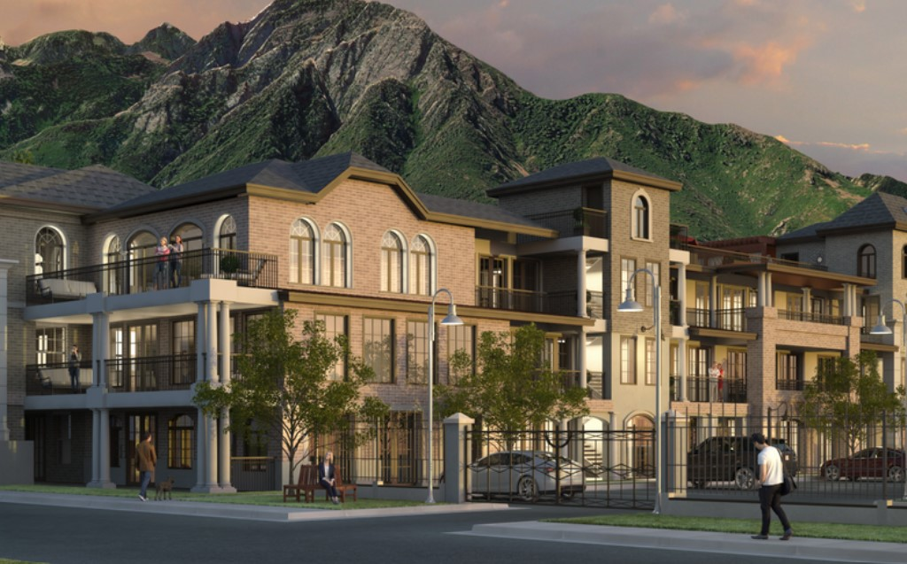

Holladay in words
Nestled in the shadow of Mount Olympus, the city of Holladay is small and pleasant. There are quiet, suburban neighborhoods that surround the main city block, with many trees and plant growth interspersed. The city block itself has small, locally owned businesses. Enjoy a taco from Taqueria 27 as you watch the traffic go by. Then take a walk down to the park, where you will find a large field for many outdoor activities and a sprawling playground for your children to enjoy. Finish your time in Holladay by enjoying some pineapple dole whip at Auntie Rae's Dessert Island as the sun sets behind the oquirrah mountains.
- As of the 2019 census:
- Estimated Population: 30,325
- People with a high school degree+, ages 25+ years: 97.7%
- People with a bachelor's degree+, ages 25+ years: 55.8%
- People in civilian labor force, ages 16+ years: 64.6%
- Median Household Income: $88,728
- All businesses for profit: 3,591
Timeline of Holladay


